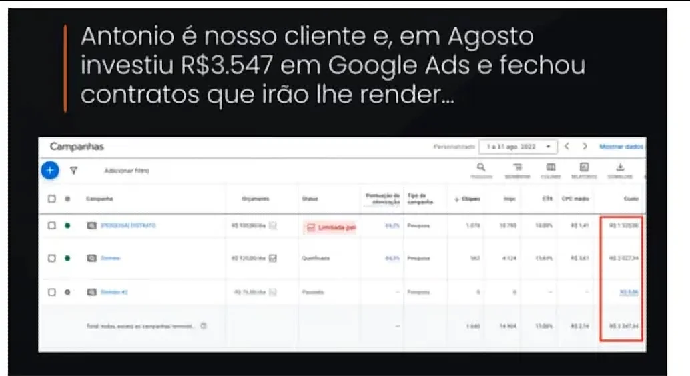
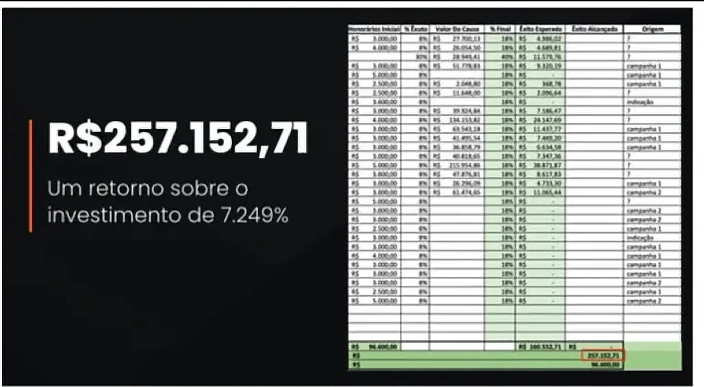
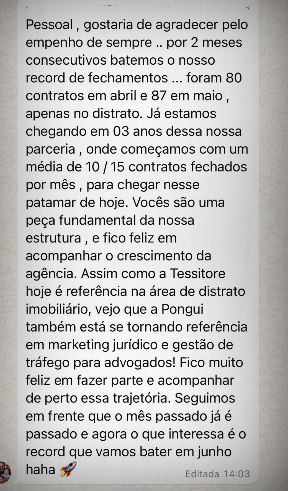
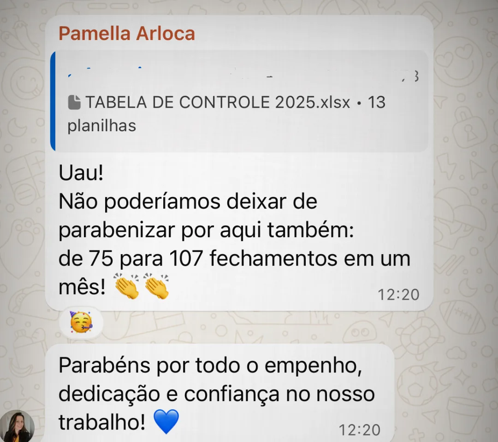
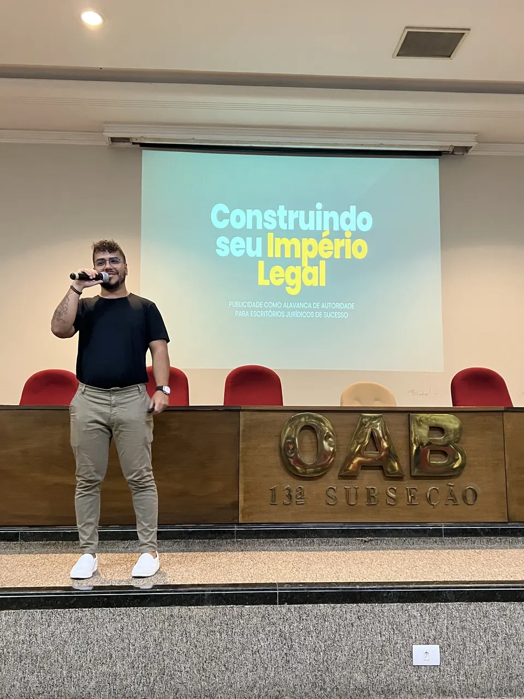

Tudo que você precisa saber sobre o meu trabalho está nesta página.
Deixa eu adivinhar: seu escritório fatura bem, você tem equipe, e tráfego pago você já tentou, com agência ou por conta própria. Veio curioso no WhatsApp, veio relatório cheio de clique e alcance, e cliente mesmo quase não veio.
Até fechou um contrato ou outro, mas você sabe que dá pra muito mais do que isso.
Aqui eu explico por que foi assim e o que muda quando a campanha é feita por quem só atende advogado.
O que eu faço
Eu pego o tráfego que já te decepcionou e transformo ele no canal mais previsível de contratos do seu escritório. Você para de torcer por indicação, seu time passa a atender lead qualificado e o seu nome vira referência na sua tese, na sua região ou no Brasil inteiro.
Só que antes de você me classificar como "mais uma agência prometendo a mesma coisa", pensa na sua última experiência com tráfego.
Provavelmente aconteceu de um desses dois jeitos. Ou você contratou uma agência que atende "todo mundo" (restaurante, clínica, advogado, tanto faz) e recebeu relatório cheio de gráfico enquanto o WhatsApp enchia de curioso pedindo consulta grátis; ou tocou as campanhas sozinho, até o tráfego virar um segundo emprego que você não tem mais tempo de fazer bem.
E o final você conhece: verba indo embora, time atendendo quem nunca ia contratar e a conclusão de que "tráfego não funciona pro meu nicho".
Só que o Google e o Meta funcionam. O que estava errado era o que colocaram lá dentro. Normalmente são três coisas:
1. Anúncio genérico ("precisa de advogado? fale conosco") atrai problema genérico. E curioso é o público mais barato da internet.
2. Se ninguém ensinar diferente, o algoritmo otimiza pro evento mais barato, que é o clique. Alguém precisa ensinar a campanha a otimizar pelo único evento que paga boleto: contrato fechado.
3. Sem escolha de tese, você disputa a palavra mais cara do Google com a mensagem mais fraca: compete por "advogado" em vez de dominar a demanda de UM problema que o seu escritório resolve melhor que qualquer concorrente da região.
Um cliente nosso investiu R$ 3,5 mil em Google Ads, no mesmo Google Ads onde talvez você tenha queimado dinheiro, e faturou R$ 257 mil em honorários. É um caso fora da curva, sim, e eu vou te mostrar ele mais pra frente com o aviso que as outras agências não têm coragem de dar.
Quando o anúncio fecha só um contrato aqui e outro ali, tem coisa errada na estrutura, e dá pra achar onde. Por isso a primeira coisa que eu faço num escritório é um diagnóstico, antes de qualquer anúncio.
Esse processo tem nome: CPC, Captação Previsível de Contratos. Calma, doutor(a), eu sei que CPC pra você é outra coisa; esse aqui é o nosso, e tem três pilares, sempre nessa ordem:
Pilar 1: Tese. Antes de gastar um real em mídia, eu estudo seu escritório inteiro: caixa, êxito ou honorários iniciais, sua expertise, demanda e concorrência da sua região. Já mapeamos 43 nichos jurídicos um por um pra fazer essa escolha.
É o pilar que a agência generalista pula, e você acabou de ler o que acontece quando pulam.
Pilar 2: Demanda. Google e Meta Ads com página exclusiva da tese e rastreamento que ensina a campanha a otimizar pelo contrato fechado em vez do clique. As artes dos anúncios, o relatório semanal e o painel mensal de resultados estão inclusos.
Pilar 3: Conversão. Quem chega no seu WhatsApp já passou pelo filtro da tese e da página. Seu time atende só quem tem o problema, e o curioso morre no filtro. Você ainda recebe meu script de atendimento validado no jurídico, com acompanhamento até o contrato assinado.
E um combinado importante: aqui não é você quem leva ideia pra agência. Estratégia é entrega nossa, com reunião estratégica mensal, relatório semanal e suporte direto no WhatsApp com a equipe.
Se hoje uma alteração na sua campanha leva uma semana pra sair, o que você tem aí é um boleto com nome de agência.
Funciona pra qualquer escritório? Não. E é melhor eu te falar isso agora.
🎯 Isso aqui é pra você que:
- já investiu em tráfego, com agência generalista ou por conta própria, e voltou mais curioso do que cliente;
- fecha um contrato ou outro com anúncio e sabe que está rodando a uma fração do potencial;
- toca as campanhas sozinho, isso virou um segundo emprego que você não tem mais tempo de fazer bem, e quer entregar pra um profissional de verdade, porque estagiário de agência aprendendo na sua verba você não aguenta de novo;
- tem equipe pra atender o dobro de clientes, e o gargalo é cliente certo chegando;
- quer ser o advogado que lembram primeiro quando aparece um caso da sua tese.
❌ Agora, quem fica de fora. Se você:
- está começando do zero, sem caixa e sem carteira (o método pressupõe um escritório já rodando);
- não pode sustentar pelo menos R$ 2 mil por mês de verba pros anúncios, além do serviço, porque campanha sem combustível não sai do lugar;
- quer milagre em 30 dias. Tese tem maturação, e quem promete isso está te enganando;
- quer assinar o contrato e sumir do projeto, quando captação tem decisões que só o dono pode tomar,
eu não sou a pessoa certa pra você. E tá tudo bem: melhor descobrir isso aqui, de graça, do que seis meses depois.
Agora os números, que é a parte que você tem todo o direito de duvidar.
📈 Pra você confiar em mim, dá uma olhada no que a gente já construiu:
R$ 3.500 investidos em Google Ads → R$ 257 mil em honorários, faturados no primeiro mês de campanha. É o nosso caso fora da curva: tese certa, na região certa, com ticket alto. E é o teto.
A média que eu sustento: nas contas ativas, cada R$ 1 investido volta pelo menos R$ 5, normalmente mais de R$ 10. Quem te mostra só o teto e esconde o piso está te vendendo loteria.
4+ anos atendendo SÓ advogado. Recuso clínica, recuso e-commerce, recuso infoproduto. Só assim dá pra ser especialista de verdade.
+70 escritórios atendidos e 43 nichos jurídicos mapeados um por um (sim, a gente contou).
Mas número falado é fácil, qualquer agência fala. Vamos aos prints.
👀 Veja você mesmo:


Distrato imobiliário, São Paulo. Antonio investiu R$ 3.547 em agosto e fechou contratos somando R$ 257.152,71 em honorários. Retorno de 7.249%.




Não pedi avaliação "bonitinha" pra ninguém, tá? O que está aqui é print real e cliente real.
Não são só os escritórios que confiam. Olha quem mais coloca o nome ao lado do nosso trabalho:
Quando não estou nas contas, estou no palco de eventos do mercado jurídico, falando das mesmas estratégias que rodam nos escritórios que você acabou de ver.

Antes do próximo passo, um último aviso.
⚠️ ATENÇÃO: NÃO preencha se você:
- quer resultado garantido em 30 dias;
- não é advogado(a) nem atua no mercado jurídico;
- não pode sustentar a verba mínima de anúncios;
- só quer saber preço por curiosidade.
Se você se reconheceu nessa carta, o próximo passo é simples e não te compromete com nada. Preenche o formulário abaixo. São algumas perguntas sobre o seu escritório e sobre o que você já tentou. Com as respostas em mãos, eu mesmo te chamo no WhatsApp e a gente faz o diagnóstico dos seus números: por que a experiência anterior decepcionou, qual tese eu atacaria primeiro no seu caso e qual conta precisa fechar pra valer a pena.
Esse diagnóstico é seu, e fica com você mesmo que a gente não feche nada. Se fizer sentido pros dois lados, aí sim eu te mostro o plano, sem call, sem "reunião de alinhamento" e sem compromisso disfarçado.
(leia a lista vermelha antes de clicar)
QUERO PREVISIBILIDADE DE CONTRATOS
❓ Ainda com uma dúvida na cabeça? Deve ser uma dessas:
Já tentei tráfego e não funcionou. Por que com vocês seria diferente?
Porque provavelmente ninguém tratou os três erros lá de cima: anúncio genérico, otimização por clique e falta de tese. Isso o diagnóstico mostra nos seus números, antes de você decidir qualquer coisa. Se a sua conta anterior estava certa e o problema era outro, eu te falo isso também.
Meu nicho é diferente. Não sei se o meu público está no Google e no Meta.
Está. Quem tem problema jurídico hoje pesquisa antes mesmo de pedir indicação: o Google pega quem digita o problema, o Meta acha quem tem o perfil de quem vive esse problema. Em 4+ anos e 43 nichos mapeados, eu ainda não encontrei tese sem demanda digital. Encontrei muita tese anunciada errado. E se o seu caso for a exceção, o diagnóstico mostra isso antes de você gastar um real.
E a OAB? Posso anunciar sem risco?
Pode. Campanha, página e criativo seguem o Provimento 205/2021 da OAB: publicidade informativa, sem promessa de resultado, sem captação indevida. E nada vai ao ar sem a sua aprovação.
Vocês garantem resultado?
Não, e desconfia de quem garante. O que eu sustento com dado: nas contas ativas, cada R$ 1 investido volta pelo menos R$ 5, normalmente mais de R$ 10. O caso fora da curva você já viu, com o devido aviso.
Eu preciso participar do projeto?
Precisa, mas do operacional não: campanha, página, criativo e otimização são entrega minha. O que eu preciso de você são as decisões de tese, a validação da estratégia e um comercial atendendo rápido. Projeto de captação com dono ausente morre, e eu já vi morrer. Se o seu momento é de sumir por seis meses, melhor não começar.
Qual é o investimento?
Eu não passo preço em página, porque o plano certo depende do diagnóstico do seu escritório. O que dá pra fazer antes disso é a conta de quantos contratos por mês pagam o investimento inteiro. Essa conta eu faço COM você, com os seus números de honorário, e só depois você decide.
Sem mais dúvidas? Então agora é com você.
Te espero do outro lado!
Um abraço, Daniel.